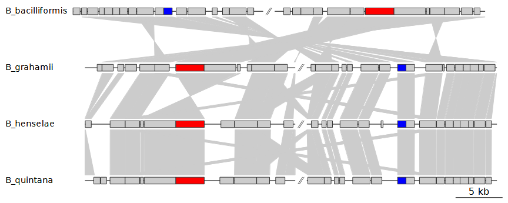
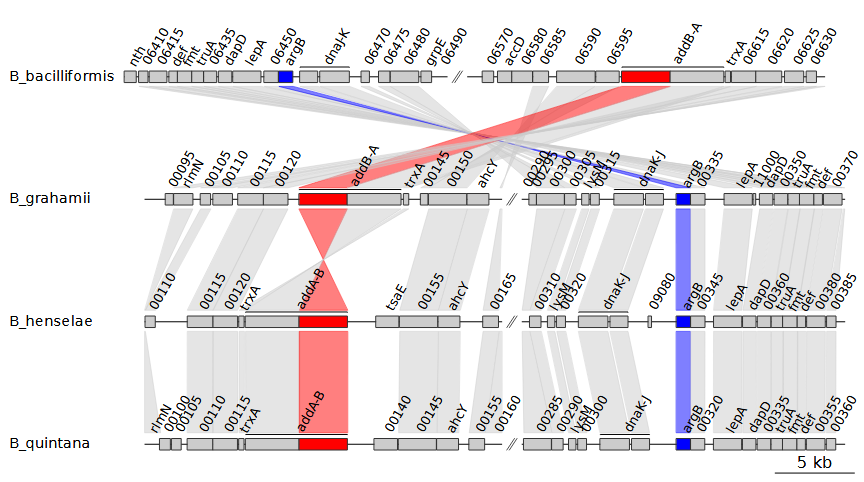
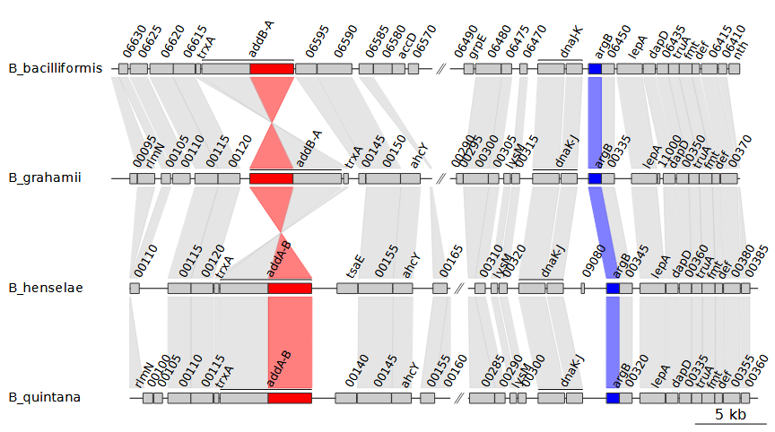
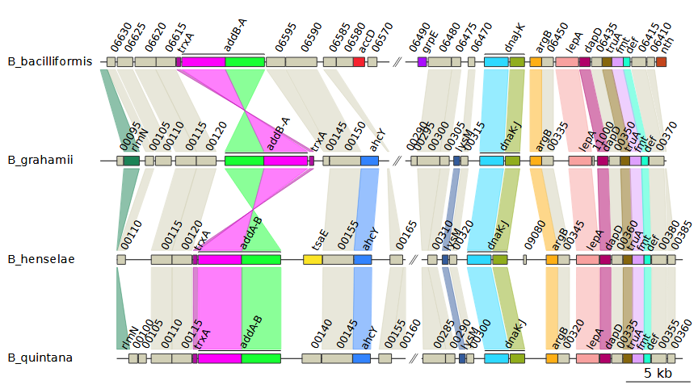
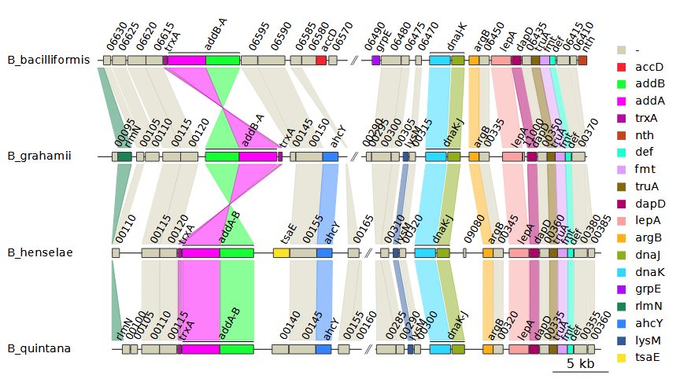
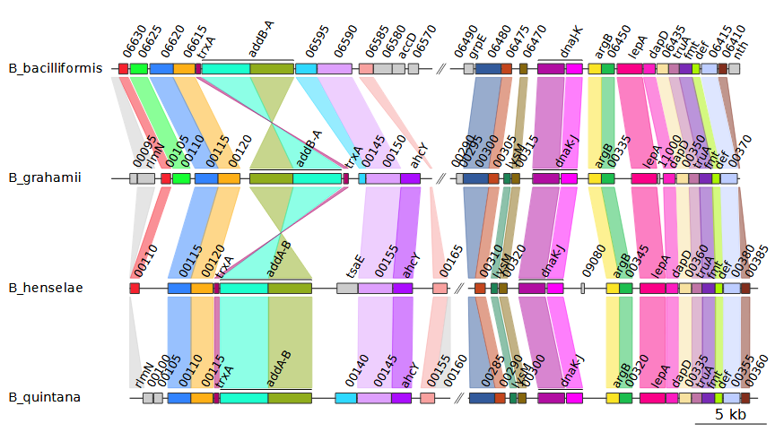

Running genoPlotR from a command-line interface
wrapper_script.Rmdrun_genoPlotR.R
The R script run_genoPlotR.R is a wrapper script that
can generate gene maps from a single command.
run_genoPlotR.R was created so that the majority of
features from genoPlotR are accessible directly from a command-line
interface. As such, there are many customization options available.
At minimum, R and the genoPlotR package must be installed to run
run_genoPlotR.R. Some of the features of
run_genoPlotR.R require the command-line versions of BLAST
or DIAMOND to be installed as well.
Basic usage
The most prominent use-case of run_genoPlotR.R is to
create regional plots of multiple genomes at a time. This usually
involves parsing a set of GenBank files and then using BLAST to create
comparisons between the resulting DNA segments.
An example of such a command is shown below:
Rscript run_genoPlotR.R \
--seg_files "path/to/dataset/GenBank/*" \
--comp_path "path/to/dataset/output/comps" \
--comp_format blastp \
--ids "path/to/dataset/ids.tab" \
--out "path/to/dataset/output/genemap.pdf"The GenBank files are provided by the --seg_files
option, which supports the usage of wildcards (*) to select
multiple files at once. In this case, all files in the
GenBank folder will be selected.
The folder specified by --comp_path holds the files used
to create comparisons between the DNA segments. The
--comp_format option tells run_genoPlotR.R
which format to use for the comparisons. If DIAMOND or a BLAST program
is selected, like blastp here, run_genoPlotR.R
will run that program to generate the necessary files, unless the files
already exist in the provided location.
The --ids option is often essential
when you want to make a regional plot. It specifies the IDs
file, which can be used to select which features to plot. The
IDs file is a table of IDs that correspond to features
to plot in the form of a tab-delimited file. Below is an example of the
contents of an IDs file:
| id | seg_label | fill | region_plot |
|---|---|---|---|
| coaE | Bhenselae | red | true |
| coaE | Bquintana | blue | true |
| dnaQ | green | ||
| AYT27_RS00030 | #CA5050 | true |
The fill column changes the color of the selected
features, while adding the value true to the
region_plot column marks the feature to be plotted. In
principle, any column can be included in an IDs file.
These columns and the respective values will be added to the
dna_segs, overwriting existing data if those columns were
already present.
However, The id and seg_label columns both
have special meanings and are treated differently:
-
idis the only mandatory column. It will match the values found in this column with those from thedna_segs, by default it will look in thenameandlocus_idcolumns (this can be changed with the--id_tagsoption). The IDs do not have to match exactly. Internally,grep()is used, so wildcards (*) and regular expressions will work as well. - The
seg_labelcolumn allows you to specify a single DNA segment by name. By doing so, you can edit features in only a singledna_seg, even when the ID in question can be found in multipledna_segs. If a row is left empty, or this column is omitted entirely, then alldna_segswill be queried for each ID.
Options
DNA segments
-s ["FILE PATH1,FILE PATH2"], --seg_files=["FILE PATH1,FILE PATH2"]
-
(Mandatory): Path to the dna_seg files to read in, with file names
separated by commas. GenBank files are recommended. Each file will
become a single dna_seg, so genomes consisting of multiple contigs or
chromosomes should be concatenated into a single file. Alternatively, a
single file with the suffix
.RDS can be provided, which
will be read as an R object containing a list of dna_segs.
-i [FILE PATH], --ids=[FILE PATH]
- id: An identifying feature ID
- seg_label: The name of the dna_seg object to query
- fill: Anything identifiable as a color by R (e.g.
red,blue4,salmon,#88CCEE) - region_plot: If the value is
plot,true,yes, ory, then the genome neighbourhood of that feature will be plotted.
A tab-delimited file with IDs corresponding to features that should
be plotted. The header should at least contain an id
column, but can include other column names to add to the dna_seg
objects. The IDs can refer to values from any dna_seg column, specified
by the --id_tags option. IMPORTANT: If
--comp_format is a blastp algorithm or DIAMOND, then the
region_plot column will be carried over to the next dna_seg
object, for any features linked by the comparisons. Notable columns
include:
-I ["COLUMN1,COLUMN2"], --id_tags=["COLUMN1,COLUMN2"]
-
A list of dna_seg column names to use alongside
--ids. The
IDs provided by the --ids option will be used as queries in
the columns provided by this option. Column names must be separated by
commas. (default: "name, locus_id")
--dna_seg_mode=[DNA_SEG PARSING MODE]
-
How should the dna_seg files supplied by
--seg_files be
read? Must be one of: all, ids,
fast - all: Read all dna_seg files provided. - ids: Read
only the dna_seg files mentioned in the --ids file, using
the seg_label column. - fast: Only allowed when making a
regional plot using blastp or DIAMOND. After reading in a dna_seg, an
alignment is made between it and the next dna_seg, transferring over the
region_plot column. If there are no features to be plotted
in this next dna_seg, then it is skipped.
-c [COMPARISON FORMAT], --comp_format=[COMPARISON FORMAT]
- diamond: tab-separated DIAMOND result file
(
--outfmt 6) - blast: tab-separated BLAST result file (
-outfmt 6) - tab: a custom tab-delimited file with the following structure:
"start1 end1 start2 end2 col gene1 gene2" - orthofinder: An OrthoFinder format file containing orthogroups for the provided dna_segs
- orthomcl: A file containing orthogroups in the orthomcl format
- mmseqs2: A file containing clusters of genes in the “Cluster TSV format” from mmseqs2, or the cluster output from DIAMOND
The format to use for reading in comparison files. If the necessary
files are not found in --comp_path, then BLAST or DIAMOND
can be chosen here to create them. Must be one of: diamond,
blast, tab, orthofinder,
orthomcl,mmseqs2, or one of the supported blast programs (blastp,blastp-fast,blastp-short,blastn,blastn-short,megablast,dc-megablast`).
-C [DIRECTORY/FILE PATH], --comp_path=[DIRECTORY/FILE PATH]
-
Path to the directory for the comparison files, or the path to a file
containing orthogroups, if
--comp_format is
orthofinder or orthomcl. This option is
ignored if --comp_format is not provided. With a
--comp_format of DIAMOND or any BLAST program, this script
will attempt to create the necessary comparison files if it can not
locate them in the directory provided. The file names should contain the
names of the dna_segs joined by an underscore,
e.g. "Genome1_Genome2.suffix" default: current directory
--comp_mode=[COMPARISON MODE]
-
The filter mode used when sequentially parsing the sequence alignments
for each dna_seg object. This option is ignored unless a BLAST program
or DIAMOND was chosen using
--comp_format. It is
recommended to use besthit and bidirectional
only when doing comparisons on a list of features, like genes or
proteins. Must be one of: besthit,
bidirectional, full. (default:
full) - besthit: Filters the sequence alignment results to
include only the best hit for each query dna_seg - bidirectional:
Filters the sequence alignment results to include only bidirectional
best hits for each pair of dna_segs - full: The sequence alignment
results are not filtered for best hits
--diamond_sensitivity=["SENSITIVITY"]
-
The sensitivity option used when running DIAMOND. This option is ignored
unless DIAMOND was chosen using
--comp_format. Must be one
of the following arguments, in order of least to most sensitive:
fast, default, mid-sensitive,
sensitive, more-sensitive,
very-sensitive, ultra-sensitive. (default:
default)
--update_positions=[AUTO|TRUE|FALSE]
-
Decides whether or not positions of comparison objects should be updated
to match the positions in the dna_segs. Must be one of:
auto, true, false. If true,
always update, if false, never update. The default is auto, which
updates the positions when --comp_format is DIAMOND or any
of the blastp algorithms.
--update_region_plot=[AUTO|TRUE|FALSE]
-
Decides whether or not the region_plot column of dna_segs should be
updated. If
true, the region_plot attribute will be given
to each feature that can be linked to a feature that already has the
region_plot attribute. Must be one of: auto,
true, false. If true, always update, if false,
never update. The default is auto, which updates region_plot when
--comp_format is DIAMOND or any of the blastp algorithms.
-o [FILE PATH], --out=[FILE PATH]
-
Name of output PDF file. (default: out.pdf)
--height=[NUM]
-
PDF height, in inches. (default: auto)
--width=[NUM]
-
PDF width, in inches. (default: auto)
-t [FILE PATH], --tree=[FILE PATH]
-
Path to newick format tree file with the dna_seg labels (file names) as
leaves.
--annotations
-
Gene annotations from the
gene column will be plotted.
-l [COLUMN], --legend_column=[COLUMN]
-
A dna_seg column to use as the basis for plotting a legend. Must be the
name of a column that appears in all dna_segs or
auto. When
auto, it will use the gene column if it is
present, and the name column if it is not, unless
--global_color_scheme is set to uniform, in
which case it will automatically use the same column as the one used to
generate the color scheme. A legend will then be plotted based on the
colors of the dna_seg features, using all of the unique values found in
the chosen column.
-g [COLOR SCHEME], --global_color_scheme=[COLOR SCHEME]
-
A color scheme to apply to the dna_segs and/or comparisons. Must be one
of:
gradient, uniform,
sequential. - gradient: Calculates color gradients based on
numerical columns. It uses red hues for direct comparisons, and blue
hues for reverse comparisons. It is applied only to comparisons, and
bases the coloring on comparison metrics, namely per_id,
bit_score, and e_value columns, in that order.
- uniform: Generates a color palette based on the possible values a
column can have for all the features that are being displayed. Looks for
a column related to homology, followed by gene and
gene_type if it cannot find any. Applies itself to both
dna_segs and comparisons. - sequential: Takes alterations made on the
colors of features in dna_segs, and transfers them over to the other
dna_segs and comparisons. Only works if changes have been made to at
least 1 dna_seg already. This can be done by using --ids,
for instance.
-G [DATASET], --color_scheme_dataset=[DATASET]
-
Which dataset to apply the color scheme to. Only applicable when
--global_color_scheme is set to uniform or sequential. Must
be one of: auto, dna_segs,
comparisons. The default is auto, which will attempt to
automatically determine how best to apply the color scheme based on the
available data.
-a [NUM], --alpha_dna_segs=[NUM]
-
A number between 0 (transparent) and 1 (opaque) for the
alpha-transparency level that will be applied to dna_segs.
-A [NUM], --alpha_comparisons=[NUM]
-
A number between 0 (transparent) and 1 (opaque) for the
alpha-transparency level that will be applied to comparisons.
--dna_seg_scale
-
A scale will be plotted for each dna_seg.
-r [NUM], --region_size=[NUM]
-
Neighbourhood size to plot, unless a sequence boundary is found first,
in bp. Setting this argument to 0 will plot the entirety of the
dna_segs. This argument is ignored when xlims are provided via
--xlims_in or --xlims_from_file (default:
10000)
-x ["XLIMS_SEG1,XLIMS_SEG2"], --xlims_in=["XLIMS_SEG1,XLIMS_SEG2"]
Predefined positions to plot for each dna_seg (and subsegment). If
--xlims_from_file is given, this option is ignored.
dna_segs must be separated by commas, in plotting order, with
subsegments separated by spaces (same format as
--print_xlims). e.g.:
"1 10000 155000 154000,500 10500"
-X [FILE PATH], --xlims_from_file=[FILE PATH]
Path to a tab-separated file with predefined positions to plot for
each dna_seg (and subsegment) in the same format as that of
--xlims_out. One line per subsegment, in plotting order,
with both positions and their dna_seg label. e.g.:
| x0 | x1 | seg_label |
|---|---|---|
| 0 | 13000 | dna_seg1 |
| 25000 | 35000 | dna_seg1 |
| 500 | 10500 | dna_seg2 |
| 25901 | 35901 | dna_seg2 |
-p, --print_xlims
-
Prints out neighbourhood limit positions to the terminal.
--xlims_out=[FILE PATH]
-
Name of output xlim file, which will contain the neighbourhood limits
that were used to plot with.
-f ["OFFSETS1,OFFSETS2"], --offsets_in=["OFFSETS1,OFFSETS2"]
A list of predefined offset values for each dna_seg and subsegment.
If --offsets_from_file is given, this option is ignored.
For each dna_seg 1 value must be provided, or as many values as there
are subsegments for that dna_seg. dna_segs must be separated by commas,
in plotting order, with subsegments separated by spaces. e.g.:
"150 1300,300"
-F [FILE PATH], --offsets_from_file=[FILE PATH]
Path to a file with predefined offset values for each dna_seg and subsegment. One line per dna_seg, in plotting order, with subsegments separated by spaces, e.g.:
150 1300 300
--print_offsets
-
Prints out offset positions to the terminal.
-S [FILE PATH], --dna_segs_out=[FILE PATH]
-
Name of output dna_segs file. If provided, the dna_segs will be saved as
an R object just after reading them in, before any alterations are made
to it. This way, this script can be called again using the same
arguments, except for providing this file to
--seg_files,
which should in most cases produce the same result, but without having
to wait for the dna_seg files to be parsed.
--workspace_out=[FILE PATH]
-
Name of output file. If provided, all of the arguments that are passed
to main plot function
plot_gene_map() are saved to this
file as well, as an R object that can be loaded in R using the
readRDS() function.
-n [NUM], --threads=[NUM]
-
Number of threads for parallel processing, used by BLAST and DIAMOND.
(default: 1)
-v, --verbose
-
Print out extra information alongside timings, mostly on writing and
reading in files
-h, --help
-
Show this help message and exit.
Examples
Using BLAST to create comparisons on the fly
For this example, we downloaded the GenBank (full) files of the most
recent versions of the four genomes that were used in the dataset found
in data("barto") from NCBI:
- Bartonella bacilliformis KC583 (NC_008783.1)
- Bartonella grahamii as4aup (NC_012846.1)
- Bartonella henselae str. Houston-1 (NC_005956.1)
- Bartonella quintana str. Toulouse (NC_005955.1)
Let’s say we are interested in the addB and
argB genes. genoPlotR will use gene names in
the name column when those are present in the GenBank file,
so we can use these gene names as IDs for this
barto_ids.tab IDs file:
| id | fill | region_plot |
|---|---|---|
| addB | red | true |
| argB | blue | true |
Using this file as input, we can create a basic gene map like this:
Rscript run_genoPlotR.R \
--seg_files "vignette_barto/GenBank/*" \
--comp_path "vignette_barto/comps" \
--comp_format blastp \
--ids "vignette_barto/barto_ids.tab" \
--out "vignette_barto/ex1_1.pdf"
--width 9This will use blastp to create comparisons and store the
resulting files in vignette_barto/comps. If we were to make
another gene map with the same input genomes, we would not need to run
BLAST a second time, even if we were to look at a different region of
these genomes.

Customization
The comparisons are a bit difficult to track and the figure is fairly bare-bones in general. So, let’s run it again, with a few visual customization options added in:
Rscript run_genoPlotR.R \
--seg_files "vignette_barto/GenBank/*" \
--comp_path "vignette_barto/comps" \
--comp_format blastp \
--ids "vignette_barto/barto_ids.tab" \
--out "vignette_barto/ex1_2.pdf" \
--width 9 \
--annotations \
--alpha_comparisons 0.5 \
--global_color_scheme sequential \
--print_xlimsInstead of showing all BLAST results, we can filter them using
--comp_mode. This option can filter the BLAST results by
taking only the best hit per query (besthit), or only
bidirectional best hits (bidirectional). Picking
bidirectional does double the amount of BLAST results
generated, as the best hits for the BLAST results in 1 direction now
have to match those of the other direction. Adding
--annotations will automatically add annotations,
displaying gene names, or locus tags when these are not available. The
--alpha_comparisons 0.5 option adds transparency to the
comparisons. easier to parse visually. The
--global_color_scheme sequential option transfers over the
colors we added earlier to the comparisons they are connected to. This
results in the following figure:

Note that we also added --print_xlims. This printed out
the xlims, the start and end coordinates for each
subsegment and DNA segment.
1368895 1389810 1412813 1435966,16890 40019 79755 100670,21410 44542 84165 105080,19042 42171 74542 95457In the examples above, each DNA segment has 2 subsegments, so 4
coordinates per DNA segment, with DNA segments separated by commas.
Because we chose to print these xlims, we can now
manipulate them. For example, we can enter the coordinates in reverse
order for B_bacciliformis, inverting that entire DNA segment.
To do so, we can use the --xlims_in option, which allows us
to manually enter in coordinates in the same format as the output of
--print_xlims:
Rscript run_genoPlotR.R \
--seg_files "vignette_barto/GenBank/*" \
--comp_path "vignette_barto/comps" \
--comp_format blastp \
--ids "vignette_barto/barto_ids.tab" \
--out "vignette_barto/ex1_3.pdf" \
--width 9 \
--annotations \
--alpha_comparisons 0.5 \
--global_color_scheme sequential \
--xlims_in "1435966 1412813 1389810 1368895,16890 40019 79755 100670,21410 44542 84165 105080,19042 42171 74542 95457"
Selecting uniform for the
--global_color_scheme option instead of
sequential automatically assigns colors based on the data
is available. In this example, it uses the gene names. Hypothetical
proteins are given a single, separate color instead. This results in the
following plot:

The --legend_column option will generate a legend based
on the values found in a dna_seg column of choice.
Alternatively, you can set it to auto. If
--global_color_scheme uniform was used, the legend will
automatically be based on the same column that was used to generate the
color scheme. In all other cases, picking auto defaults to
the gene column, or the name column if the
gene column is not present. So, by adding
--legend_column auto to the previous plot we get this:

Visualing cluster results
In addition to sequence alignments from BLAST and DIAMOND,
run_genoPlotR.R also supports the use of sequence
clustering tools to create the comparisons between DNA segments. Support
is included for the output formats used by OrthoMCL, Orthofinder, and
mmseqs2. This method requires a bit more preparation, as the results
must be created beforehand. However, it does offer certain advantages as
well.
For example, we can use DIAMOND to cluster the sequences. This
requires FASTA files for each of the input DNA segments. In the previous
examples, BLAST was used to create the comparisons, which also generates
the necessary FASTA files. The genoPlotR includes
genbank_to_fasta() and dna_seg_to_fasta()
functions to create FASTA files directly from GenBank files or
dna_seg objects, respectively. Assuming the FASTA files
have been made, you could use a command like this to concatenate them
all:
cat vignette_barto/fasta/*.fa > vignette_barto/concat.faThe resulting file can then be used for DIAMOND:
diamond cluster -d "vignette_barto/concat.fa" -o "vignette_barto/clusters.tab"We can now use this as input for run_genoPlotR.R by
selecting this file with --comp_path and setting
--comp_format to mmseqs2.
IMPORTANT: Entering --comp_format diamond
would result in using DIAMOND for pairwise sequence alignments, not
clustering. The clustering results from DIAMOND are in the same format
as those produced by mmseqs2, which is why we select that option
instead. One of the advantages of using clustering is that the order of
the DNA segments can be freely changed, as the comparisons are no longer
created from pairwise sequence alignments. Another advantage is that all
dna_seg features that are in the same cluster are
automatically given the same colors when the uniform color scheme is
chosen. In this example, the comparisons made are the same as those from
bidirectional best hits from BLAST, but clustering results are often
more reliable.
Rscript run_genoPlotR.R \
--seg_files "vignette_barto/GenBank/*" \
--comp_path "vignette_barto/clusters.tab" \
--comp_format mmseqs2 \
--ids "vignette_barto/barto_ids.tab" \
--out "vignette_barto/ex1_5.pdf" \
--width 9 \
--annotations \
--alpha_comparisons 0.5 \
--global_color_scheme uniform \
--xlims_in "1435966 1412813 1389810 1368895,16890 40019 79755 100670,21410 44542 84165 105080,19042 42171 74542 95457"